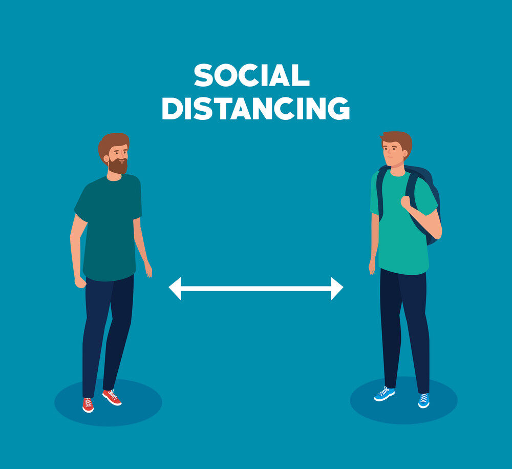

What is Coronavirus?
Coronaviruses are a group of related RNA viruses that cause diseases in mammal and birds. In humans and birds, they cause respiratory tract infections that can range from mild to lethal. Mild illnesses in humans include some cases of the common cold (which is also caused by other viruses, predominantly rhinoviruses), while more lethal varieties can cause SARS and COVID-19, which is causing an ongoing pandemic. In cows and pigs they cause diarrhea, while in mice they cause hepatitis and encephalomyelitis.
COVID-19
In December 2019, a pneumonia outbreak was reported in Wuhan, China. On 31 December 2019, the outbreak was traced to a novel strain of coronavirus, which was given the interim name 2019-nCoV by the World Health Organization, later renamed SARS-CoV-2 by the International Committee on Taxonomy of Viruses.

As of 5 June2022, there have been at least 6,284,762 confirmed deaths and more than 527,941,243 confirmed cases in the COVID-19 pandemic. The Wuhan strain has been identified as a new strain of Betacoronavirus from group 2B with approximately 70% genetic similarity to the SARS-CoV. The virus has a 96% similarity to a bat coronavirus, so it is widely suspected to originate from bats as well.
Causes
The evidence so far indicates that the virus is spread from person to person through small respiratory droplets. When a person coughs or sneezes, these droplets can also land on nearby surfaces. There is also evidence that the COVID-19 virus can last on surfaces – especially plastic or metal – for up to 3 days.
Protective measures
To prevent the spread of COVID-19:
1-Maintain a safe distance from others (at least 1 metre), even if they don't appear to be sick.
2-Wear a mask in public, especially indoors or when physical distancing is not possible.
3-Choose open, well-ventilated spaces over closed ones. Open a window if indoors.
4-Clean your hands often. Use soap and water, or hygiene
5-Get vaccinated when it’s your turn. Follow local guidance about vaccination.
6-Cover your nose and mouth with your bent elbow or a tissue when you cough or sneeze.
7-Stay home if you feel unwell.
